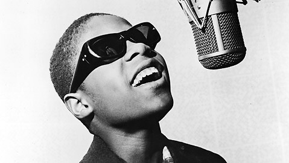
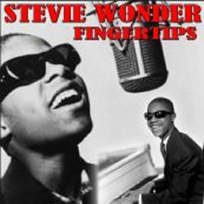

Video
Su versión en vivo fue grabada en el Regal Theater de Chicago en junio de 1962. Con Marvin Gaye a la batería y Stevie tocando la armónica fue número 1 en el ranking Billboard de USA el 21 de Agosto de 1963. Nacido para ser una estrella, con tan solo 12 años, realizó un álbum en vivo que consiguiera para la Motown uno de los primeros número 1, siendo la persona más joven en alcanzar simultáneamente el número 1 en singles y álbumes.

Se trataba de Recorded Live: The 12 Year Old Genius, y dentro una deliciosa canción titulada Fingertips Part II, su primer número 1. Una grabación realizada en vivo en junio de 1962 durante una Motortown Revue en el Regal Theater en Chicago, Illinois. Allí un pequeño Stevie Wonder demostraba sus habilidades a los bongos y a la armónica, a la vez que explosionaba una interpretación salvaje, espontánea, y desenfrenada a ritmo endiablado de puro swing, mostrando a una estrella que acabaría convirtiéndose en un genio de la música de nuestro tiempo.
Un talento sin igual cuya estrella permanece viva con los años, irradiando con fuerza su luz.

Letra
'Yeah'
'Yeah'
hablando:
Ladies and gentlemen, now I'm going to do a song
taken from my album, 'The Jazz Soul of Little Stevie'
The name of the song is called, umm, 'Fingertips'.
Now, I want ya to clap yo' hand, come on.
Come on!
Yeah!
Stomp yo' feet
Jump up and down, do anything that you wanna do!
Yeah!
Yeah!
-instrumental y Stevie tocando armónica:
Ev'rybody say, 'Yeah'
(Yeah, yeah!)
Say, yeah!
(Yeah!)
Say, yeah
(Yeah!)
Yeah?
(Yeah!)
Yeah! Yeah! Yeah!
(instrumental y armónica)
un pequeño golpe -a so-whoa-whoa-whoa-oh-oul
Yeah-yeah, yeah-yeah-yeah-yeah
Clap your hands, just a little bit louder
Clap your hands, just a little bit louder
(armónica y instrumental)
Stevie cantando:
I know that ev'rybody had, yeah
Ev'rybody have a good time
So, if you want me to
If you want me to
I'm gonna swing a-song
Yeah, just-a one mo' time
Be sure I'll come back
Just-a one more time
When I come back
So, good-bye
(armónica)
Presentador hablando:
How about it?
Let's hear it for him, huh?
Little Stevie Wonder
Take a bow, Steveland
(instrumental)
(armónica)
(piano)
Mujer desconocida del público: 'Yeah!, Harry, get down!'
Miembros de la banda: (What key? What key?)
Otros miembros de la banda: (Been tellin' you)
Miembro de la banda: (You been tellin' me, what?)
(instrumental)
(Batería)
Stevie: Hey!
Come on!
Well, good-bye, good-bye
A-good-bye, good-bye
Good-bye, good-bye, good-bye
I'm gonna go, yeah
I'm gonna go, yeah
Let's just swing it one more time!
(instrumental y final de armónica)
Presentador:
'How 'bout it?'
'Go ahead an shake this up for me real good'
'Stevie Wonder.'